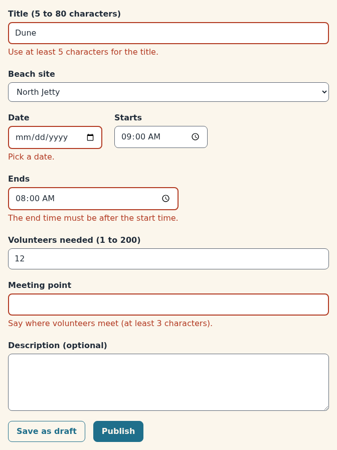
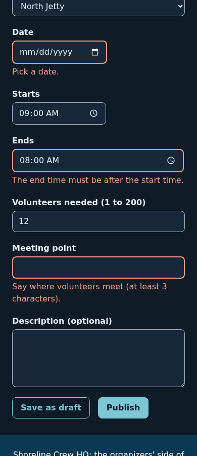
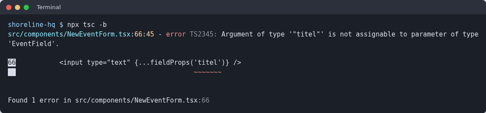

📝 Lesson 3.5: Forms and Actions
Organizers do not only read Shoreline Crew HQ; they plan the cleanups in it. Today the app gets its first real form: "Plan a cleanup", with a title, a beach site, a date and times, how many volunteers are needed and where to meet. You will learn the two ways an input can hold its value, React 19's form actions that hand you the whole form at once, useActionState for results and "saving..." states, and how to write error messages that tell people exactly what to fix.
🎯 Learning Objectives
By the end of this lesson, you will be able to:
- Explain the difference between controlled and uncontrolled inputs, and choose the right one for a field
- Pass a function to a form's
actionand read the submittedFormDatasafely, narrowingFormDataEntryValue | nullwithoutas - Use
useActionStateto turn each submit into typed state, andisPendingto show that a submit is in progress - Keep what people typed when a submit fails, and know why React resets a form after an action
- Write field messages that say how to fix the problem, and connect them to their fields with
aria-invalidandaria-describedby - Build the HQ's "Plan a cleanup" form, with checks that agree with the API's own rules
📦 Code for this lesson
Starting code: lesson-11-start.zip · Finished code: lesson-11-end.zip. Each folder has a README with the commands to run it. Copy .env.example to .env.local in shoreline-hq before npm run dev.
In This Lesson
🎚️ Controlled and Uncontrolled Inputs
The search box you built in Lesson 3.4 is a controlled input: React state holds the text, the input shows that state through value, and every keystroke goes through onChange back into the state. Here it is once more, on its own, with a character count. Create src/Scratch.tsx in shoreline-hq (your experiment file for this lesson) and try it:
import { useState } from 'react'
// Controlled: React state holds the text, and the input shows the state
export function MeetingPointField() {
const [meetingPoint, setMeetingPoint] = useState('')
return (
<div className="field">
<label htmlFor="meeting-point">Meeting point</label>
<input
id="meeting-point"
value={meetingPoint}
onChange={(event) => setMeetingPoint(event.target.value)}
/>
<p>{meetingPoint.length} of 120 characters</p>
</div>
)
}Type North jetty steps and the line under the field says 17 of 120 characters as you type. Because React holds the value, your code knows it at every moment, so it can count it, check it or change it.
An uncontrolled input is the browser's own text box: the browser holds what is typed, and your code reads it when it needs it, usually when the form is sent. You give it a name (the key it is sent under) and, if it should start with something, a defaultValue (the starting text, not a live link):
import { useState } from 'react'
// Uncontrolled: the browser holds the text; you read it when the form is sent
export function CrewNote() {
const [lastNote, setLastNote] = useState('')
function saveNote(formData: FormData) {
const note = formData.get('note')
if (typeof note === 'string') {
setLastNote(note.trim())
}
}
return (
<form action={saveNote}>
<label htmlFor="note">Note for the crew</label>
<input id="note" name="note" defaultValue="" />
<button type="submit">Save note</button>
<p>Last note: {lastNote === '' ? 'none yet' : lastNote}</p>
</form>
)
}No state for the text, no onChange. Type Bring sunscreen and press Save note: the line says Last note: Bring sunscreen, and the field is empty again, ready for the next note. The next section explains both what action={saveNote} does and why the field empties itself.
| Controlled | Uncontrolled | |
|---|---|---|
| Who holds the value | React state | The browser (the DOM) |
| You write | value + onChange | name (+ defaultValue) |
| You read the value | Any time, from state | When the form is sent, from FormData |
| Re-renders while typing | Every keystroke | None |
| Good for | Live search, counters, fields that depend on each other, formatting as you type | Fill-in-and-submit forms: sign-ups, "plan a cleanup", settings |
Neither one is "the React way" and the other a hack. Controlled inputs are the right tool when you need the value on every keystroke; for the classic "fill it in, send it once" form, where you only care about the values at submit time, uncontrolled inputs read through FormData are less code and let React 19 manage the sending. The "Plan a cleanup" form is that classic kind.
💡 Mental model: the sign-up sheet and the clipboard
A controlled input is the organizer's clipboard from Lesson 3.4: every change goes through the organizer, who always knows what it says. An uncontrolled form is a paper sign-up sheet on the welcome table. People write on it by themselves, and the organizer only reads it when the sheet is handed in. Both work; you would not use a clipboard for forty volunteers writing at once, and you would not use a sign-up sheet for a live head count.
📮 Form Actions and Typed FormData
In plain HTML, <form action="/signup"> means "send these fields to that address and load a new page". React 19 adds a second kind of action: a function. Press a submit button (or Enter in a text field) and React stops the page load, collects every named field into a FormData object, and calls your function with it. That is the saveNote(formData: FormData) above. When the function has finished, React resets the form: every uncontrolled field goes back to its defaultValue. That is why the note field emptied itself.
The prop's type in @types/react spells this out: a form's action is a URL string, or (formData: FormData) => void | Promise<void>. So the function may be async, which matters in Lesson 7.2 when it talks to the API.
What formData.get really returns
FormData is the browser's own type, and TypeScript describes it honestly. Try to treat a field as a string:
export function readTitle(formData: FormData): string {
const title: string = formData.get('title')
return title.trim()
}Expected output (npx tsc -b)
src/Scratch.tsx:2:9 - error TS2322: Type 'FormDataEntryValue | null' is not assignable to type 'string'.
Type 'null' is not assignable to type 'string'.
2 const title: string = formData.get('title')
~~~~~
Found 1 error in src/Scratch.tsx:2get returns FormDataEntryValue | null, and FormDataEntryValue is File | string: a File when the field is a file input (Lesson 8.2 uploads photos), null when the form has no field with that name. This is the "outside data is unknown until checked" lesson from 2.1 and 2.4 again, in a smaller form. Narrow it, exactly as you narrowed API data:
// formData.get() returns a string, a File (from a file input) or null (no such field)
function readText(formData: FormData, name: EventField): string {
const value = formData.get(name)
return typeof value === 'string' ? value.trim() : ''
}After typeof value === 'string', TypeScript knows it is a string, and a missing field becomes an empty string your checks will report. Many tutorials write formData.get('title') as string instead. It compiles, and it is a promise TypeScript cannot check. Misspell the field name once:
import { useState } from 'react'
export function TitleForm() {
const [title, setTitle] = useState('')
function saveTitle(formData: FormData) {
// "as string" silences TypeScript, and the misspelled name returns null
const value = formData.get('titel') as string
setTitle(value.trim())
}
return (
<form action={saveTitle}>
<label htmlFor="title">Title</label>
<input id="title" name="title" />
<button type="submit">Save</button>
<p>Title: {title}</p>
</form>
)
}npx tsc -b and npm run lint both pass. Type a title, press Save, and the action stops in the browser:
Browser console (dev server)
Uncaught TypeError: Cannot read properties of null (reading 'trim')There is no field named titel, so get returned null, and as string told TypeScript not to worry about it. The typeof check costs one line and turns this crash into a message the person can act on. Two more FormData facts you will use today:
formData.getAll('name')returns every value sent under a name, asFormDataEntryValue[]: one per ticked checkbox in a group (Exercise 3).- The button that submitted the form is included when it has a
name:<button type="submit" name="status" value="scheduled">sendsstatus=scheduled. Two such buttons give one form two different submits, such as "Save as draft" and "Publish".
The way you will see in most React code: onSubmit
Before React 19, forms were handled with an onSubmit event handler, and you will meet this in nearly every codebase and tutorial. It still works and is still fine:
import { useState, type SubmitEvent } from 'react'
// The way most React code handled forms before actions, and still fine to use
export function CrewNoteClassic() {
const [lastNote, setLastNote] = useState('')
function handleSubmit(event: SubmitEvent<HTMLFormElement>) {
event.preventDefault() // stop the browser from sending the form and loading a new page
const note = new FormData(event.currentTarget).get('note')
if (typeof note === 'string') {
setLastNote(note.trim())
}
}
return (
<form onSubmit={handleSubmit}>
<label htmlFor="note">Note for the crew</label>
<input id="note" name="note" />
<button type="submit">Save note</button>
<p>Last note: {lastNote === '' ? 'none yet' : lastNote}</p>
</form>
)
}The handler's type is SubmitEvent<HTMLFormElement>, React's type for submit events (Lesson 3.4's FAQ explained why the older FormEvent is now marked deprecated). event.preventDefault() stops the browser's own page load, and new FormData(event.currentTarget) reads the form. Saved this way, the note stays in the field: nothing resets the form unless your code does. With an action, React does the preventDefault, the FormData and the reset for you, and, with the Hook in the next section, it also tracks the result and whether a submit is still running.
🔄 useActionState: Results and Pending
A form action on its own returns nothing to the screen. To show "you're on the list" or "enter an email address", the action's result has to become state. React 19's useActionState Hook does exactly that:
import { useActionState } from 'react'
type JoinState =
| { kind: 'idle' }
| { kind: 'invalid'; message: string }
| { kind: 'joined'; email: string }
// An action for useActionState gets the previous state first, then the FormData
function joinWaitingList(_previous: JoinState, formData: FormData): JoinState {
const email = formData.get('email')
if (typeof email !== 'string' || !email.includes('@')) {
return { kind: 'invalid', message: 'Enter an email address, such as you@example.com.' }
}
return { kind: 'joined', email }
}
export function WaitingList() {
const [state, formAction] = useActionState(joinWaitingList, { kind: 'idle' })
return (
<form action={formAction}>
<label htmlFor="email">Email</label>
<input id="email" name="email" />
<button type="submit">Join the waiting list</button>
{state.kind === 'invalid' && <p>{state.message}</p>}
{state.kind === 'joined' && <p>{state.email} is on the waiting list.</p>}
</form>
)
}Read it from the Hook call:
useActionState(joinWaitingList, { kind: 'idle' })takes your action and the first state. It returns[state, formAction, isPending]; this example uses the first two.- You give the form
formAction, notjoinWaitingList. React calls your function with the previous state first, then theFormData, and whatever it returns becomes the newstateand re-renders the component. - The state is a discriminated union on
kind, as in Lesson 3.3: the component narrows it to decide what to draw. The underscore in_previoussays "required by the signature, not used here". - TypeScript infers the state type from the action's return type. Hover over the three names in VS Code:
stateisJoinState(shown written out as the union),formActionis(payload: FormData) => void, andisPendingis aboolean.
Type maya and press the button: the page says Enter an email address, such as you@example.com., and the field is empty. React reset the form after the action, as it always does. Retyping one email address is a small annoyance; retyping a whole cleanup because of one mistake would make organizers give up. The project solves it by returning what was typed in the state and showing it again with defaultValue. With maya@example.com the page says maya@example.com is on the waiting list.
isPending: while the action runs
An action may be async. Until the API arrives in Lesson 7.2, this one pretends with a one-second wait:
import { useActionState } from 'react'
// Pretend the server takes a second to answer (Lesson 7.2 sends real requests)
function wait(ms: number): Promise<void> {
return new Promise((resolve) => setTimeout(resolve, ms))
}
async function saveBagCount(_previous: string, formData: FormData): Promise<string> {
await wait(1000)
const bags = formData.get('bags')
return typeof bags === 'string' ? `Saved: ${bags} bags.` : ''
}
export function BagCountForm() {
const [message, formAction, isPending] = useActionState(saveBagCount, '')
return (
<form action={formAction}>
<label htmlFor="bags">Bags collected</label>
<input id="bags" name="bags" type="number" />
<button type="submit" disabled={isPending}>
{isPending ? 'Saving…' : 'Save'}
</button>
<p role="status">{message}</p>
</form>
)
}Enter 14 and press Save: for a second the button says Saving… and is disabled, so nobody sends the same count twice; then it says Save again and the status line reads Saved: 14 bags. You never wrote useState(false) for "is it saving?": isPending is true from the submit until the action's promise settles. Notice the return type: an async function returns Promise<string>, and the state is still a plain string, because React waits for the promise.
💡 Why this matters
Forms are where users hand your app their work, and where most of them give up. A form that loses their typing, double-submits, or says "Invalid input" without saying which input costs real sign-ups and real volunteers. Teams notice developers who get forms right, and the pattern you learn today (typed values in, typed result out, the server checks again) is the same one React Hook Form, Next.js server actions and React Native forms use.
One "you'll see this in old code" note: during React 19's beta this Hook was called useFormState and lived in react-dom. Tutorials from that time still import it; today it is useActionState, imported from react.
💬 Messages People Understand
Three places that check
A cleanup's details are checked in up to three places, and each has a different job:
- The browser checks attributes such as
required,type="email"andmaxbefore anything else, and shows its own bubble. Its wording depends on the browser and its language, and the bubble disappears when focus moves. - Your form's checks run in the action and produce messages you wrote, in the place you choose, worded for this app.
- The API checks everything again, because anyone can send it anything without your form. It is the authority: front-end checks are for people, never for security. shoreline-api answers a bad request with status 400 and a body like
{ "error": "validation_failed", "message": "...", "fieldErrors": { "title": ["Add a title."] } }, theApiErrorBodytype insrc/api/types.ts.
The project form adds noValidate to the <form>, which turns off the browser's bubbles so every message comes from one place and looks the same. It keeps type="date", type="time" and type="number", which still give people date pickers and number keyboards on phones. Without noValidate, a capacity of 500 in a field with max={200} never reaches your action: Chrome blocks the submit and shows "Value must be less than or equal to 200." in a bubble next to the field, and your status line says nothing.
What a good field message does
| Instead of… | Write… | Because |
|---|---|---|
| Invalid input | Use at least 5 characters for the title. | Say which field and how to fix it |
| Error: endTime <= startTime | The end time must be after the start time. | Plain words, no field names from the code |
| Enter a date as YYYY-MM-DD. | Pick a date. | People use a date picker; the format is the program's business |
| You entered an invalid capacity! | Capacity must be a whole number from 1 to 200. | Describe the rule, do not blame the person |
| A list of errors at the top only | Each message right under its field | People fix fields where they are; Lesson 8.2 adds a summary as well |
Saying the rule before anyone breaks it helps even more: the project's labels read "Title (5 to 80 characters)" and "Volunteers needed (1 to 200)".
Messages that assistive technology can find
A red message under a field is obvious to someone who can see it. For a screen reader user, the field and its message must be connected in the markup:
aria-invalid="true"on the field: screen readers announce that the field is invalid.aria-describedby="title-error"on the field, andid="title-error"on the message: the message is read out with the field's name when the field gets focus.- Not color alone: the message is text, and the field's outline gets thicker as well as red.
The messages use the API's own fieldErrors shape, field name to a list of messages, so in Lesson 7.2 the API's answers can be shown with the same component. When the project is done, run the same bad drafts through the form's checks and through shoreline-api, and they report problems in exactly the same fields. Most messages are word for word the same; a few are reworded for people:
| Field | shoreline-api says | The form says |
|---|---|---|
title | Use at least 5 characters for the title. | Use at least 5 characters for the title. |
date (empty) | Enter a date as YYYY-MM-DD. | Pick a date. |
date (in the past) | Pick today or a later date. | Pick today or a later date. |
startTime (empty) | Enter a time as HH:MM (24-hour clock). | Pick a start time. |
endTime | The end time must be after the start time. | The end time must be after the start time. |
capacity | Capacity must be a whole number from 1 to 200. | Capacity must be a whole number from 1 to 200. |
⚠️ Common Mistakes
⚠️ The action's parameters in the wrong order
A plain form action takes (formData). An action for useActionState takes (previousState, formData). Swap them in the waiting-list example, function joinWaitingList(formData: FormData, _previous: JoinState), and:
Expected output (npx tsc -b, trimmed)
src/Scratch.tsx:18:46 - error TS2769: No overload matches this call.
The last overload gave the following error.
Argument of type '(formData: FormData, _previous: JoinState) => JoinState' is not assignable to parameter of type '(state: { kind: "idle"; } | { kind: "invalid"; message: string; } | { kind: "joined"; email: string; }, payload: JoinState) => Promise<{ kind: "idle"; } | { kind: "invalid"; message: string; } | { ...; }> | { ...; } | { ...; } | { ...; }'.
Types of parameters 'formData' and 'state' are incompatible.
Type '{ kind: "idle"; } | { kind: "invalid"; message: string; } | { kind: "joined"; email: string; }' is not assignable to type 'FormData'.
Type '{ kind: "idle"; }' is missing the following properties from type 'FormData': append, delete, get, getAll, and 7 more.
18 const [state, formAction] = useActionState(joinWaitingList, { kind: 'idle' })
~~~~~~~~~~~~~~~
...A long message, so read it from the bottom: your formData parameter would receive the state, and a { kind: "idle" } object is not a FormData. "No overload matches this call" means "none of the Hook's signatures fit what you passed".
⚠️ A field without a name
FormData only collects fields that have a name. An id is not enough. Forget it and the field is simply missing: your code reads null, the project's typeof check turns that into an empty string, and the form says "Add a title." for a title you typed (then the reset empties the field, because the action never saw the text). Neither tsc nor oxlint can see this. If a field "is always empty", check its name first.
⚠️ as string on form data
It turns a type error into the run-time "Cannot read properties of null" above. Narrow with typeof value === 'string' instead.
⚠️ A button that submits by accident
Inside a <form>, a <button> without a type is a submit button. A "Clear" or "Show details" button inside a form needs type="button", as the course's buttons have had since Lesson 3.4.
🛠️ Project: Plan a Cleanup
Organizers need to plan new cleanups. Today they get a "Plan a cleanup" page at /events/new: a form with typed values, checks that follow the API's rules, a message under every field that needs fixing, and two ways to submit. Saving to the API needs a signed-in organizer (Lesson 5.2) and a POST request (Lesson 7.2), so for now a successful submit shows exactly what would be saved, already shaped as the API's NewEvent type.
Start both servers (node server.ts in shoreline-api, npm run dev in shoreline-hq). Delete src/Scratch.tsx if you still have it.
Step 1: Types for the form, and reading it (12 min)
The form's logic gets its own file, so the component stays about markup. Create src/utils/eventForm.ts with this first half:
// Reading and checking the "Plan a cleanup" form (Lesson 3.5).
// Module 8 replaces these hand-written checks with one Zod schema.
import type { DateString, NewEvent } from '../api/types.ts'
import { sites } from '../data/sites.ts'
// The form's fields, named like the API's NewEvent properties
export type EventField =
| 'title'
| 'siteId'
| 'date'
| 'startTime'
| 'endTime'
| 'capacity'
| 'meetingPoint'
| 'description'
// What the person typed, as text, so the form can show it again
export type EventFormValues = Record<EventField, string>
// The API's fieldErrors shape (field name: messages), with names TypeScript can check
export type FieldErrors = Partial<Record<EventField, string[]>>
export const emptyValues: EventFormValues = {
title: '',
siteId: '',
date: '',
startTime: '',
endTime: '',
capacity: '',
meetingPoint: '',
description: '',
}
// formData.get() returns a string, a File (from a file input) or null (no such field)
function readText(formData: FormData, name: EventField): string {
const value = formData.get(name)
return typeof value === 'string' ? value.trim() : ''
}
export function readValues(formData: FormData): EventFormValues {
return {
title: readText(formData, 'title'),
siteId: readText(formData, 'siteId'),
date: readText(formData, 'date'),
startTime: readText(formData, 'startTime'),
endTime: readText(formData, 'endTime'),
capacity: readText(formData, 'capacity'),
meetingPoint: readText(formData, 'meetingPoint'),
description: readText(formData, 'description'),
}
}EventFieldis a union of the field names, spelled like the API'sNewEventproperties. Every function below takes anEventField, so a misspelled name is a type error instead of an always-empty field (Step 5 shows the message).EventFormValuesisRecord<EventField, string>: every field, as the text the person typed. Text on purpose, even for the capacity: if someone types something that is not a number, the form must be able to show it back to them unchanged.FieldErrorsis the API'sfieldErrorsshape with checked keys.Partialmakes every field optional: a field with no problem has no entry. Because ofnoUncheckedIndexedAccess(Lesson 2.4),errors.titleisstring[] | undefined, so you must check before using it.readTextis the narrowing from the teaching section, withtrim()so that a title of three spaces counts as empty, as it does for the API.
The API's rule "today or a later date" needs today's date as YYYY-MM-DD on the organizer's calendar. Add this function at the end of src/utils/format.ts:
// Today (or any moment) as a "YYYY-MM-DD" day on this computer's calendar
export function toDateString(date: Date): DateString {
const month = String(date.getMonth() + 1).padStart(2, '0')
const day = String(date.getDate()).padStart(2, '0')
return `${date.getFullYear()}-${month}-${day}`
}It reads the local year, month and day, for the same reason formatDate avoids UTC: toISOString() would give the UTC day, which on the US west coast is already tomorrow every evening.
Step 2: The checks, with messages that help (12 min)
Add the rest of src/utils/eventForm.ts:
// The API's rules for a new cleanup, with messages that say how to fix the problem
export function validateEvent(values: EventFormValues, today: DateString): FieldErrors {
const errors: FieldErrors = {}
function add(field: EventField, message: string) {
errors[field] = [...(errors[field] ?? []), message]
}
if (values.title === '') add('title', 'Add a title.')
else if (values.title.length < 5) add('title', 'Use at least 5 characters for the title.')
else if (values.title.length > 80) add('title', 'Keep the title to 80 characters or fewer.')
if (!sites.some((site) => site.id === values.siteId)) {
add('siteId', 'Choose one of the cleanup sites.')
}
if (values.date === '') add('date', 'Pick a date.')
else if (values.date < today) add('date', 'Pick today or a later date.')
if (values.startTime === '') add('startTime', 'Pick a start time.')
if (values.endTime === '') add('endTime', 'Pick an end time.')
else if (values.startTime !== '' && values.endTime <= values.startTime) {
add('endTime', 'The end time must be after the start time.')
}
const capacity = Number(values.capacity)
if (values.capacity === '' || !Number.isInteger(capacity) || capacity < 1 || capacity > 200) {
add('capacity', 'Capacity must be a whole number from 1 to 200.')
}
if (values.meetingPoint.length < 3) {
add('meetingPoint', 'Say where volunteers meet (at least 3 characters).')
} else if (values.meetingPoint.length > 120) {
add('meetingPoint', 'Keep the meeting point to 120 characters or fewer.')
}
if (values.description.length > 2000) {
add('description', 'Keep the description to 2000 characters or fewer.')
}
return errors
}
// Only called once validateEvent found nothing: the text becomes the API's types
export function toNewEvent(values: EventFormValues, status: 'draft' | 'scheduled'): NewEvent {
return {
title: values.title,
siteId: values.siteId,
date: values.date,
startTime: values.startTime,
endTime: values.endTime,
capacity: Number(values.capacity),
meetingPoint: values.meetingPoint,
description: values.description,
status,
}
}validateEventreturnsFieldErrors: an empty object means "nothing to fix". It takestodayas a parameter instead of reading the clock itself, so the same values always give the same answer (handy for the tests in Module 9).- The small
addhelper appends a message to a field's list, with?? []for a field that has none yet. - Dates and times are compared as text. That works because
YYYY-MM-DDand 24-hourHH:MMstrings sort in time order:'08:00' < '09:00'. Number(values.capacity)turns the text into a number;Number.isIntegerrejects2.5and theNaNyou get from text that is not a number. The empty field is checked separately, becauseNumber('')is0.toNewEventbuilds the API'sNewEvent. Its return type means TypeScript checks every property against the API's contract: leave outmeetingPointand you get the TS2741 "missing property" error from Lesson 2.2.
These rules repeat the API's, by hand. That duplication is deliberate for now, and it is exactly the problem Module 8 solves: one Zod schema gives the types, the checks and the messages, and React Hook Form handles forms at scale (field arrays, multi-step forms, uploads). Today's version shows you what those libraries do for you.
Step 3: The form, with useActionState (16 min)
First a small component for the message under a field. Create src/components/FieldError.tsx:
interface FieldErrorProps {
id: string
messages: string[] | undefined
}
// The message under a field. The field points at it with aria-describedby.
export function FieldError({ id, messages }: FieldErrorProps) {
if (messages === undefined) {
return null
}
return (
<p id={id} className="field-error">
{messages.join(' ')}
</p>
)
}messages: string[] | undefined rather than messages?: string[]: the prop is required, so every field has to say "here are my messages, if any", and you cannot forget one by accident. It accepts errors.title directly. Now the form itself. Create src/components/NewEventForm.tsx:
import { useActionState } from 'react'
import type { NewEvent } from '../api/types.ts'
import { sites } from '../data/sites.ts'
import {
emptyValues,
readValues,
toNewEvent,
validateEvent,
type EventField,
type EventFormValues,
type FieldErrors,
} from '../utils/eventForm.ts'
import { formatDate, toDateString } from '../utils/format.ts'
import { FieldError } from './FieldError.tsx'
// What the form shows: what the person typed and what to fix, or a cleanup ready to save
type FormState =
| { kind: 'editing'; values: EventFormValues; errors: FieldErrors }
| { kind: 'ready'; event: NewEvent }
const initialState: FormState = { kind: 'editing', values: emptyValues, errors: {} }
// The form's action: React calls it with the previous state and the submitted FormData
function planCleanup(_previous: FormState, formData: FormData): FormState {
const values = readValues(formData)
const errors = validateEvent(values, toDateString(new Date()))
if (Object.keys(errors).length > 0) {
return { kind: 'editing', values, errors }
}
// The button that submitted the form sends its own name and value
const status = formData.get('status') === 'scheduled' ? 'scheduled' : 'draft'
return { kind: 'ready', event: toNewEvent(values, status) }
}
export function NewEventForm() {
const [state, formAction, isPending] = useActionState(planCleanup, initialState)
const values = state.kind === 'editing' ? state.values : emptyValues
const errors = state.kind === 'editing' ? state.errors : {}
// The props every field needs: its name, what to show, and a link to its message
function fieldProps(field: EventField) {
const invalid = errors[field] !== undefined
return {
id: field,
name: field,
defaultValue: values[field],
'aria-invalid': invalid,
'aria-describedby': invalid ? `${field}-error` : undefined,
}
}
return (
<>
<p role="status" className="form-status">
{state.kind === 'ready' && (
<>
Ready to save: <strong>{state.event.title}</strong>,{' '}
{formatDate(state.event.date)}, {state.event.startTime} to {state.event.endTime}, as{' '}
{state.event.status === 'scheduled' ? 'a published cleanup' : 'a draft'}.
</>
)}
</p>
<form action={formAction} noValidate className="event-form">
<div className="field">
<label htmlFor="title">Title (5 to 80 characters)</label>
<input type="text" {...fieldProps('title')} />
<FieldError id="title-error" messages={errors.title} />
</div>
<div className="field">
<label htmlFor="siteId">Beach site</label>
{/* React reads a select's defaultValue only when it creates the select: a new key */}
{/* makes a new select whenever the value to show changes */}
<select key={values.siteId} {...fieldProps('siteId')}>
<option value="">Choose a site</option>
{sites.map((site) => (
<option key={site.id} value={site.id}>
{site.name}
</option>
))}
</select>
<FieldError id="siteId-error" messages={errors.siteId} />
</div>
<div className="form-row">
<div className="field">
<label htmlFor="date">Date</label>
<input type="date" {...fieldProps('date')} />
<FieldError id="date-error" messages={errors.date} />
</div>
<div className="field">
<label htmlFor="startTime">Starts</label>
<input type="time" {...fieldProps('startTime')} />
<FieldError id="startTime-error" messages={errors.startTime} />
</div>
<div className="field">
<label htmlFor="endTime">Ends</label>
<input type="time" {...fieldProps('endTime')} />
<FieldError id="endTime-error" messages={errors.endTime} />
</div>
</div>
<div className="field">
<label htmlFor="capacity">Volunteers needed (1 to 200)</label>
<input type="number" min={1} max={200} {...fieldProps('capacity')} />
<FieldError id="capacity-error" messages={errors.capacity} />
</div>
<div className="field">
<label htmlFor="meetingPoint">Meeting point</label>
<input type="text" {...fieldProps('meetingPoint')} />
<FieldError id="meetingPoint-error" messages={errors.meetingPoint} />
</div>
<div className="field">
<label htmlFor="description">Description (optional)</label>
<textarea rows={4} {...fieldProps('description')} />
<FieldError id="description-error" messages={errors.description} />
</div>
<div className="form-actions">
<button
type="submit"
name="status"
value="draft"
className="button-secondary"
disabled={isPending}
>
Save as draft
</button>
<button
type="submit"
name="status"
value="scheduled"
className="button-primary"
disabled={isPending}
>
Publish
</button>
</div>
</form>
</>
)
}Work through it top to bottom:
FormStateis a union onkind:editing(what was typed and what to fix) orready(a checkedNewEvent). A state can never have both errors and a finished cleanup.planCleanuplives outside the component: it uses no props and no state of its own, only its parameters, likematchesFiltersin Lesson 3.4. It reads, checks, and returns the next state.new Date()here is fine: an action is not rendering, so the purity rule from Lesson 3.1 does not apply.- The submit buttons both have
name="status", soformData.get('status')says which one was pressed. Anything but'scheduled'counts as a draft, which is also what Enter in a text field does: it presses the first submit button, "Save as draft", the safe choice. valuesanddefaultValue: React resets the form after every action. Each field'sdefaultValueis what was submitted (whileediting), or empty (whenready), so after a submit with mistakes the reset puts everything back as typed, and after a good one the form is empty for the next cleanup. Hover overerrors: TypeScript worked outPartial<Record<EventField, string[]>>from both branches, soerrors[field]is allowed.fieldPropsreturns the five props every field needs, and{...fieldProps('title')}spreads them onto the element: each property becomes a prop. Its return type is inferred, and TypeScript still checks each spread prop's type against what the element accepts:'aria-invalid': 'yes'would be a TS2322 error.- The
keyon the<select>deals with a quirk, explained in the version note below. - The status line is always in the page, empty until there is something to say. A
role="status"region that appears together with its text may not be announced; one that is already there and gets new text is. isPendingdisables both buttons while the action runs. With today's instant checks you will never see it; in Lesson 7.2 the action waits for the API, and this line is already in place.
🧩 Version note: selects and the form reset
In React 19.3, which this course was checked with, React applies a <select>'s defaultValue only when it creates the select. When the form resets after an action, the select goes back to the value it was created with, not the newest defaultValue: without the key, an organizer who picked North Jetty finds "Choose a site" again after fixing a typo in the title. Text, date, time and number inputs, text areas and checkboxes do follow the newest defaultValue (or defaultChecked). key={values.siteId} uses what Lesson 3.3 taught about keys: when the value to show changes, the key changes, and React makes a new select that starts with it. If a later React version changes this, the key does no harm.
Step 4: A page, a way in, and styles (8 min)
Create src/pages/NewEventPage.tsx:
import { NewEventForm } from '../components/NewEventForm.tsx'
export function NewEventPage() {
return (
<>
<h1>Plan a cleanup</h1>
<p className="lead">
Fill in the basics. Save it as a draft to finish later, or publish it so volunteers can
sign up.
</p>
<NewEventForm />
</>
)
}Give it an address in App.tsx's temporary page switch (React Router replaces this in Lesson 6.1). Change these lines:
import { HomePage } from './pages/HomePage.tsx'
+import { NewEventPage } from './pages/NewEventPage.tsx'
import { SitesPage } from './pages/SitesPage.tsx' function CurrentPage() {
+ if (path === '/events/new') {
+ return <NewEventPage />
+ }
if (path === '/events') {Then a link to it under the events page's heading, in src/pages/EventsPage.tsx:
<h1>Cleanup events</h1>
+ <p>
+ <a href="/events/new">Plan a cleanup</a>
+ </p>
<EventFiltersAnyone can open the page for now; Lesson 6.3 lets only organizers in, and the API already refuses everyone else. Last, the styles. The error color needs its own dark-mode value (Coral is too dark on the dark page), so add a role token next to the others in src/index.css, in :root and in the dark-mode block:
--border: #e4dccb;
+ --error: var(--coral); --border: #2b4257;
+ --error: #ff9b85;Let the field styles from Lesson 3.4 cover text areas too:
.field input,
-.field select {
+.field select,
+.field textarea {And add the form's own rules at the end of the file:
/* Forms (Lesson 3.5) */
.event-form {
display: flex;
flex-direction: column;
gap: 1.25rem;
max-width: 40rem;
}
.form-row {
display: flex;
flex-wrap: wrap;
gap: 1.25rem 1.5rem;
}
.form-row .field input {
min-width: 10rem;
}
.field-error {
margin: 0;
color: var(--error);
font-weight: 400;
}
.field [aria-invalid='true'] {
border: 2px solid var(--error);
}
.form-actions {
display: flex;
flex-wrap: wrap;
gap: 1rem;
}
.button-primary {
padding: 0.5rem 1rem;
border: 1px solid var(--link);
border-radius: 0.5rem;
background: var(--link);
color: var(--page);
font: inherit;
font-weight: 600;
cursor: pointer;
}
.form-status {
padding: 0.75rem 1rem;
border-left: 4px solid var(--link);
background: var(--surface);
}
/* Kept in the page while empty, so screen readers notice when a message arrives */
.form-status:empty {
padding: 0;
border: 0;
}The red outline uses an attribute selector, [aria-invalid='true']: the style follows the same fact the screen reader announces, so the two cannot disagree. The primary button uses the page color on the link color, which keeps its contrast in both modes.
Step 5: Try it, check it, break it (8 min)
Open http://localhost:5173/events and follow Plan a cleanup. Type Dune as the title, pick North Jetty, enter a start of 09:00 and an end of 08:00, 12 volunteers, and press Publish:

Four messages, each under its field, and everything you typed is still there, including the site. Now fix them: a longer title such as Dune Grass Cleanup, a date in the coming weeks, an end time of 11:30, a meeting point. Press Publish again:

ready state, React clears the form, and the status line says what would be saved.Fill it in once more and press Enter in the meeting point field: the status line ends "as a draft." Check the page at phone size and in dark mode, and try it with the keyboard only: Tab through the fields and the two buttons.

Then break it twice, undoing each change:
- In
NewEventForm.tsx, change{...fieldProps('title')}to{...fieldProps('titel')}and runnpx tsc -b. - Remove
key={values.siteId}from the<select>, then repeat the first submit with mistakes in the browser.

EventField, so a misspelled name is an error in the editor instead of a field that is always empty.Expected output (1: a misspelled field name)
src/components/NewEventForm.tsx:66:45 - error TS2345: Argument of type '"titel"' is not assignable to parameter of type 'EventField'.
66 <input type="text" {...fieldProps('titel')} />
~~~~~~~
Found 1 error in src/components/NewEventForm.tsx:66The second change passes npx tsc -b without a word, and the browser shows the problem: after the submit, every field keeps its text but Beach site is back to "Choose a site". Put the key back. Then run the full check:
npx tsc -b
npm run lint
npm run buildExpected output (npm run build)
> shoreline-hq@0.0.0 build
> tsc -b && vite build
vite v8.3.8 building client environment for production...
✓ 41 modules transformed.
computing gzip size...
dist/index.html 0.46 kB │ gzip: 0.30 kB
dist/assets/index-DW_7JB8R.css 3.91 kB │ gzip: 1.32 kB
dist/assets/index-Cu4CzZZ5.js 244.03 kB │ gzip: 75.45 kB
✓ built in 103ms41 modules instead of 37: eventForm.ts, FieldError, NewEventForm and NewEventPage. (Times, sizes and hashes will differ.)
Your own project: pick the most important form in your Lesson 11.1 app. Write its Values type (every field as text), its result type as a union on kind, and three field messages that say how to fix the problem without blaming anyone.
✅ Project Completion Checklist
- ☐
src/utils/eventForm.tshas theEventField,EventFormValuesandFieldErrorstypes, reads the form withtypeofnarrowing, and checks it with the API's rules - ☐
NewEventFormusesuseActionStatewith aFormStateunion, keeps what was typed after a submit with mistakes, and clears itself after a good one - ☐ Every field has a label, a
name, and, when it needs fixing,aria-invalidandaria-describedbypointing at its message - ☐ "Save as draft" and "Publish" both work, and the status line says what is ready to save
- ☐
/events/newis reachable from the events page, and looks right on a phone and in dark mode - ☐
npx tsc -b,npm run lintandnpm run buildall pass, andsrc/Scratch.tsxis deleted
🏋️ Hands-on Exercises
Exercises 1 and 2 are part of the lesson (about 15 minutes together, included in the lesson time).
🏋️ Exercise 1: Quick notes
In src/Scratch.tsx, write a QuickNotes component: a form with one uncontrolled text field and an Add note button, whose action adds the note to a list in state (skip empty notes). Under the form, show "N notes. Latest: ..." ("1 note" for one). Render it by temporarily returning it from CurrentPage in App.tsx. You do not need useActionState: which Hook do you need instead, and why?
💡 Hint
The list is state that grows: useState<string[]>([]) (Lesson 3.4's empty-array rule) and an updater that copies, [...current, note]. The action is a plain (formData: FormData) => void. notes.at(-1) is the last item, or undefined.
✅ Solution
import { useState } from 'react'
export function QuickNotes() {
const [notes, setNotes] = useState<string[]>([])
function addNote(formData: FormData) {
const note = formData.get('note')
if (typeof note === 'string' && note.trim() !== '') {
setNotes((current) => [...current, note.trim()])
}
}
return (
<section>
<h2>Notes for the crew</h2>
<form action={addNote}>
<label htmlFor="quick-note">New note</label>
<input id="quick-note" name="note" />
<button type="submit">Add note</button>
</form>
<p>
{notes.length} {notes.length === 1 ? 'note' : 'notes'}. Latest: {notes.at(-1) ?? 'none yet'}
</p>
</section>
)
}After two notes the line says 2 notes. Latest: Meet at the stairs, and the field is empty after each one: React reset the form. useState is enough because the action does not need the previous result to work out the next one; it only adds to a list, and the updater function gives it the current list. useActionState is for when the action's return value is what you show. Put App.tsx back and delete Scratch.tsx when you are done.
🏋️ Exercise 2: Why defaultValue matters
In NewEventForm.tsx, delete the line defaultValue: values[field], from fieldProps. Run npx tsc -b and npm run lint (both pass). Then in the browser, repeat Step 5's first submit with mistakes. What happens to the fields, and to the messages? Explain it, then put the line back.
💡 Hint
What does React do to a form after every action? And what does a field go back to when it has no defaultValue?
✅ Solution
The same four messages appear, but every field is empty, the site menu included: the organizer has to type everything again to fix one short title. The action ran and returned the typed values in the state, but nothing put them back into the fields. React reset the form, as it does after every action, and a field without a defaultValue resets to empty. The state remembered; the fields did not. The two tools cannot catch this: it is behavior, not types.
🏋️ Exercise 3: What the crew brings (Stretch)
Optional stretch, not counted in the lesson time (about 20 minutes).
The API's NewEvent has an optional suppliesProvided: string[]. Add a group of checkboxes, "We bring", for Gloves, Bags, Grabbers and Water, all named suppliesProvided, and send the ticked ones with the new cleanup. Ticked boxes must stay ticked after a submit with mistakes, and clear after a good one.
💡 Hint
formData.getAll('suppliesProvided') gives every ticked box's value; keep the strings with filter((value) => typeof value === 'string') (TypeScript infers that this callback narrows, so the result is string[]). Group checkboxes in a <fieldset> with a <legend>. The editing state needs the ticked supplies too, and each checkbox gets defaultChecked.
✅ Solution
// Reading and checking the "Plan a cleanup" form (Lesson 3.5).
// Module 8 replaces these hand-written checks with one Zod schema.
import type { DateString, NewEvent } from '../api/types.ts'
import { sites } from '../data/sites.ts'
// The form's fields, named like the API's NewEvent properties
export type EventField =
| 'title'
| 'siteId'
| 'date'
| 'startTime'
| 'endTime'
| 'capacity'
| 'meetingPoint'
| 'description'
// What the person typed, as text, so the form can show it again
export type EventFormValues = Record<EventField, string>
// The API's fieldErrors shape (field name: messages), with names TypeScript can check
export type FieldErrors = Partial<Record<EventField, string[]>>
export const emptyValues: EventFormValues = {
title: '',
siteId: '',
date: '',
startTime: '',
endTime: '',
capacity: '',
meetingPoint: '',
description: '',
}
// formData.get() returns a string, a File (from a file input) or null (no such field)
function readText(formData: FormData, name: EventField): string {
const value = formData.get(name)
return typeof value === 'string' ? value.trim() : ''
}
export function readValues(formData: FormData): EventFormValues {
return {
title: readText(formData, 'title'),
siteId: readText(formData, 'siteId'),
date: readText(formData, 'date'),
startTime: readText(formData, 'startTime'),
endTime: readText(formData, 'endTime'),
capacity: readText(formData, 'capacity'),
meetingPoint: readText(formData, 'meetingPoint'),
description: readText(formData, 'description'),
}
}
// The API's rules for a new cleanup, with messages that say how to fix the problem
export function validateEvent(values: EventFormValues, today: DateString): FieldErrors {
const errors: FieldErrors = {}
function add(field: EventField, message: string) {
errors[field] = [...(errors[field] ?? []), message]
}
if (values.title === '') add('title', 'Add a title.')
else if (values.title.length < 5) add('title', 'Use at least 5 characters for the title.')
else if (values.title.length > 80) add('title', 'Keep the title to 80 characters or fewer.')
if (!sites.some((site) => site.id === values.siteId)) {
add('siteId', 'Choose one of the cleanup sites.')
}
if (values.date === '') add('date', 'Pick a date.')
else if (values.date < today) add('date', 'Pick today or a later date.')
if (values.startTime === '') add('startTime', 'Pick a start time.')
if (values.endTime === '') add('endTime', 'Pick an end time.')
else if (values.startTime !== '' && values.endTime <= values.startTime) {
add('endTime', 'The end time must be after the start time.')
}
const capacity = Number(values.capacity)
if (values.capacity === '' || !Number.isInteger(capacity) || capacity < 1 || capacity > 200) {
add('capacity', 'Capacity must be a whole number from 1 to 200.')
}
if (values.meetingPoint.length < 3) {
add('meetingPoint', 'Say where volunteers meet (at least 3 characters).')
} else if (values.meetingPoint.length > 120) {
add('meetingPoint', 'Keep the meeting point to 120 characters or fewer.')
}
if (values.description.length > 2000) {
add('description', 'Keep the description to 2000 characters or fewer.')
}
return errors
}
// The supplies the crew can bring: one checkbox each, all named suppliesProvided
export const supplyChoices = ['Gloves', 'Bags', 'Grabbers', 'Water']
// getAll() returns every checked box's value (FormDataEntryValue[]): keep the strings
export function readSupplies(formData: FormData): string[] {
return formData.getAll('suppliesProvided').filter((value) => typeof value === 'string')
}
// Only called once validateEvent found nothing: the text becomes the API's types
export function toNewEvent(
values: EventFormValues,
status: 'draft' | 'scheduled',
supplies: string[],
): NewEvent {
return {
title: values.title,
siteId: values.siteId,
date: values.date,
startTime: values.startTime,
endTime: values.endTime,
capacity: Number(values.capacity),
meetingPoint: values.meetingPoint,
description: values.description,
suppliesProvided: supplies,
status,
}
}import { useActionState } from 'react'
import type { NewEvent } from '../api/types.ts'
import { sites } from '../data/sites.ts'
import {
emptyValues,
readSupplies,
readValues,
supplyChoices,
toNewEvent,
validateEvent,
type EventField,
type EventFormValues,
type FieldErrors,
} from '../utils/eventForm.ts'
import { formatDate, toDateString } from '../utils/format.ts'
import { FieldError } from './FieldError.tsx'
// What the form shows: what the person typed and what to fix, or a cleanup ready to save
type FormState =
| { kind: 'editing'; values: EventFormValues; supplies: string[]; errors: FieldErrors }
| { kind: 'ready'; event: NewEvent }
const initialState: FormState = {
kind: 'editing',
values: emptyValues,
supplies: [],
errors: {},
}
// The form's action: React calls it with the previous state and the submitted FormData
function planCleanup(_previous: FormState, formData: FormData): FormState {
const values = readValues(formData)
const supplies = readSupplies(formData)
const errors = validateEvent(values, toDateString(new Date()))
if (Object.keys(errors).length > 0) {
return { kind: 'editing', values, supplies, errors }
}
// The button that submitted the form sends its own name and value
const status = formData.get('status') === 'scheduled' ? 'scheduled' : 'draft'
return { kind: 'ready', event: toNewEvent(values, status, supplies) }
}
export function NewEventForm() {
const [state, formAction, isPending] = useActionState(planCleanup, initialState)
const values = state.kind === 'editing' ? state.values : emptyValues
const supplies = state.kind === 'editing' ? state.supplies : []
const errors = state.kind === 'editing' ? state.errors : {}
// The props every field needs: its name, what to show, and a link to its message
function fieldProps(field: EventField) {
const invalid = errors[field] !== undefined
return {
id: field,
name: field,
defaultValue: values[field],
'aria-invalid': invalid,
'aria-describedby': invalid ? `${field}-error` : undefined,
}
}
return (
<>
<p role="status" className="form-status">
{state.kind === 'ready' && (
<>
Ready to save: <strong>{state.event.title}</strong>,{' '}
{formatDate(state.event.date)}, {state.event.startTime} to {state.event.endTime}, as{' '}
{state.event.status === 'scheduled' ? 'a published cleanup' : 'a draft'}.
</>
)}
</p>
<form action={formAction} noValidate className="event-form">
<div className="field">
<label htmlFor="title">Title (5 to 80 characters)</label>
<input type="text" {...fieldProps('title')} />
<FieldError id="title-error" messages={errors.title} />
</div>
<div className="field">
<label htmlFor="siteId">Beach site</label>
{/* React reads a select's defaultValue only when it creates the select: a new key */}
{/* makes a new select whenever the value to show changes */}
<select key={values.siteId} {...fieldProps('siteId')}>
<option value="">Choose a site</option>
{sites.map((site) => (
<option key={site.id} value={site.id}>
{site.name}
</option>
))}
</select>
<FieldError id="siteId-error" messages={errors.siteId} />
</div>
<div className="form-row">
<div className="field">
<label htmlFor="date">Date</label>
<input type="date" {...fieldProps('date')} />
<FieldError id="date-error" messages={errors.date} />
</div>
<div className="field">
<label htmlFor="startTime">Starts</label>
<input type="time" {...fieldProps('startTime')} />
<FieldError id="startTime-error" messages={errors.startTime} />
</div>
<div className="field">
<label htmlFor="endTime">Ends</label>
<input type="time" {...fieldProps('endTime')} />
<FieldError id="endTime-error" messages={errors.endTime} />
</div>
</div>
<div className="field">
<label htmlFor="capacity">Volunteers needed (1 to 200)</label>
<input type="number" min={1} max={200} {...fieldProps('capacity')} />
<FieldError id="capacity-error" messages={errors.capacity} />
</div>
<div className="field">
<label htmlFor="meetingPoint">Meeting point</label>
<input type="text" {...fieldProps('meetingPoint')} />
<FieldError id="meetingPoint-error" messages={errors.meetingPoint} />
</div>
<fieldset className="supplies">
<legend>We bring</legend>
{supplyChoices.map((choice) => (
<label key={choice}>
<input
type="checkbox"
name="suppliesProvided"
value={choice}
defaultChecked={supplies.includes(choice)}
/>{' '}
{choice}
</label>
))}
</fieldset>
<div className="field">
<label htmlFor="description">Description (optional)</label>
<textarea rows={4} {...fieldProps('description')} />
<FieldError id="description-error" messages={errors.description} />
</div>
<div className="form-actions">
<button
type="submit"
name="status"
value="draft"
className="button-secondary"
disabled={isPending}
>
Save as draft
</button>
<button
type="submit"
name="status"
value="scheduled"
className="button-primary"
disabled={isPending}
>
Publish
</button>
</div>
</form>
</>
)
}Tick Gloves and Water and submit with mistakes: both stay ticked, because checkboxes follow the newest defaultChecked when the form resets (only the select needed a key). The course's own code continues without this group; Lesson 8.2 builds lists of fields with React Hook Form's field arrays.
🎯 Quick Quiz
🎯 Check Your Understanding
Question 1: A form has action={saveNote} and one uncontrolled input with defaultValue="". Someone types a note and presses the submit button. What is in the input after saveNote has finished?
Question 2: What is the type of formData.get('title')?
Question 3: In which order does React pass arguments to an action used with useActionState?
Question 4: Why does the project's <select> have key={values.siteId}?
Question 5: The form already checks every rule the API has. Why does shoreline-api check the same data again?
❓ Common Questions at This Stage
Should every form be uncontrolled now?
No. Use controlled inputs when the screen needs the value while someone types: the events page's search, a character counter, a field that changes another one. Use uncontrolled fields with an action for fill-in-and-submit forms. Mixing is fine too: one controlled field in an otherwise uncontrolled form works, as long as you decide what it should show after the reset.
What is useFormStatus? I saw it next to useActionState.
A Hook from react-dom that a component inside a form can call to ask "is my form submitting?". It is handy for a reusable SubmitButton component that disables itself without receiving isPending as a prop. The HQ's buttons sit in the same component as useActionState, so isPending is simpler here.
Why not use required and let the browser do the checking?
You can, and for a tiny form it is reasonable. The browser's bubbles cannot show the API's rules (a date that must not be in the past, an end after the start), their wording changes between browsers, and they vanish when focus moves. With noValidate, one set of messages covers everything and stays on the page. The input types (date, time, number) still help on every device.
Can anyone open /events/new right now?
Yes, and nothing is saved yet, so no harm is done. When saving arrives, the API itself refuses anyone who is not a signed-in organizer (401 or 403), whatever the front end shows. Lesson 6.3 also hides the page from non-organizers, which is about a friendly experience, not security.
🌟 Going Further: Bonus Challenge
Add a live character count under the description, "N of 2000 characters", like the meeting point example in the first section. That makes the textarea controlled, inside a form that resets after every action. Decide what the count (and the text) should show after a submit with mistakes and after a good one, make it happen, and write down why you chose that. Hint: the key idea from this lesson is one way; lifting the description into the action's state is another.
📓 Learning Journal
Take five to ten minutes and jot down:
- Key concepts you learned today
- Techniques that clicked (and the ones that have not, yet)
- Questions or confusion to look up or bring to the next session
- Ideas to try on your own
- Progress and feelings: how did this lesson go for you?
✍️ This lesson's prompt: Follow one press of Publish with mistakes from start to finish, in your own words: what React collects, what planCleanup returns, what the component draws, what the reset does, and how the typed title gets back into its field. Then rewrite the worst error message you have seen in an app you use, the way this lesson's table suggests.
📝 Lesson Summary
🎓 Key Takeaways
- Controlled inputs keep their value in React state (
value+onChange); uncontrolled inputs keep it in the browser and are read throughFormDatawhen the form is sent - A function in a form's
actionreceives the form'sFormData; React resets the form afterwards, so fields show theirdefaultValueagain formData.getreturnsFormDataEntryValue | null: narrow it withtypeof, never withas string, and give every field anameuseActionState(action, initialState)returns[state, formAction, isPending]; the action gets the previous state first, then theFormData, and its return value is the new state- Good field messages say how to fix the problem, sit under their field, and are linked with
aria-invalidandaria-describedby; the server always checks again - Module 8 replaces the hand-written types and checks with one Zod schema and React Hook Form
| If you want to… | Go to |
|---|---|
| Look up form and Hook patterns quickly | React Cheat Sheet |
| See the API's rules and error shapes | Shoreline API reference |
| Read React's reference for forms and actions | React: <form> |
| Read React's reference for the Hook | React: useActionState |
| Read about accessible form errors | W3C WAI: User Notifications |
🏆 What You've Accomplished
- You can tell controlled and uncontrolled inputs apart and pick the right one
- You read form data the safe way and saw what
as stringhides - You turned submits into typed state with
useActionState, including a pending state - You wrote field messages that help, and connected them for screen readers
- Organizers can plan a cleanup in Shoreline Crew HQ, with checks that agree with the API
🔭 Looking Ahead
The HQ now has an events page, a sites page and a form, all styled from one global stylesheet that is getting long. In Lesson 3.6: Styling and Accessible Components every component gets its own CSS Module, the headings get the crew's font, focus styles become visible for keyboard users, and you run your first accessibility check on the pages you have built.
📋 Before the Next Lesson
- Make sure
npx tsc -b,npm run lintandnpm run buildpass inshoreline-hq, and thatsrc/Scratch.tsxis gone - Use the form once with the keyboard only, and once at phone size
- Keep your own app's form types from the project for Lesson 11.1
🌱 Encouragement for the Journey
Forms look simple and are not: today you met the browser's rules, React's rules, TypeScript's rules and the API's rules, all on one page. If the reset and the select key felt like a lot, that is normal. You did not just copy a form, you watched each piece fail on purpose and saw why it is there, which is exactly what makes the form libraries in Module 8 feel obvious instead of magic. Every good form you ever fill in was built by someone who once found all of this confusing.